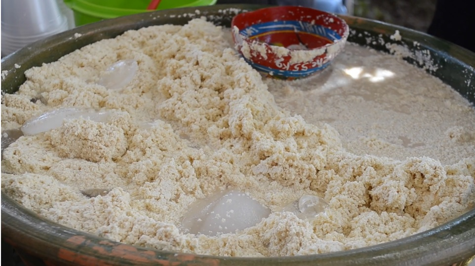

TRADICIONES
Entre las tradiciones que más destacan en la comunidad son las ferias patronales, ya que son especiales
para la comunidad. Durante el año se realizan 2 ferias una en febrero y otra en agosto, durante estas
fiestas, también, se hacen algunas mayordomías que son muy típicas en Santa Ana Zegache.